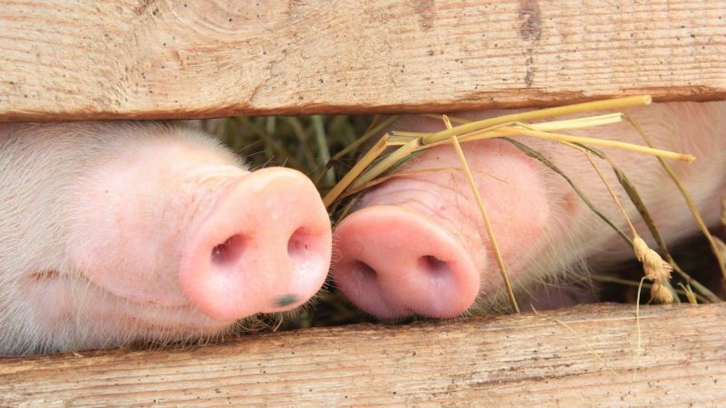
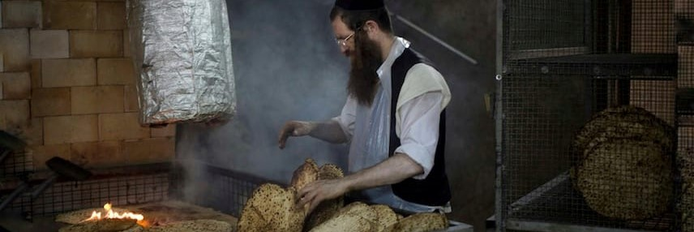

NOVITÀ

Qui ci va l'articolo dei maiali, che è tanto piaciuto al cavo vav
CATEGORIE
Feste Ebraiche

La liberazione dal Chametz
Autore: Rav Shaikevitz Levi Yitzchok
12 Aprile 2022
L'educazione Ebraica
Shaikevitz Levi Yitzchok
Le 4 fasi del seder di Pesach
Shaikevitz Levi Yitzchok
I cosmetici Kasher le Pesach
Shaikevitz Levi Yitzchok
Kashrut

La dieta dell'Anima
Autore: -
12 Maggio 1986
Permesso e vietato nella Torah
Shaikevitz Levi Yitzchok
La Shechità è una pratica crudele?
-
Maiale & Ebraismo
Shaikevitz Levi Yitzchok